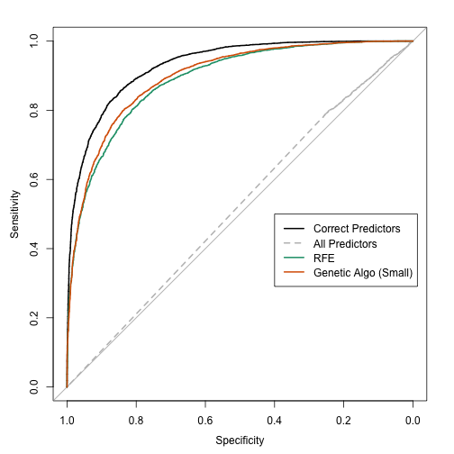
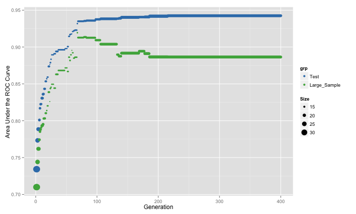
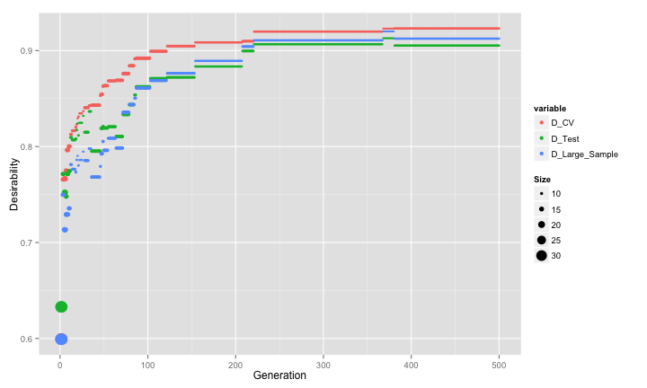
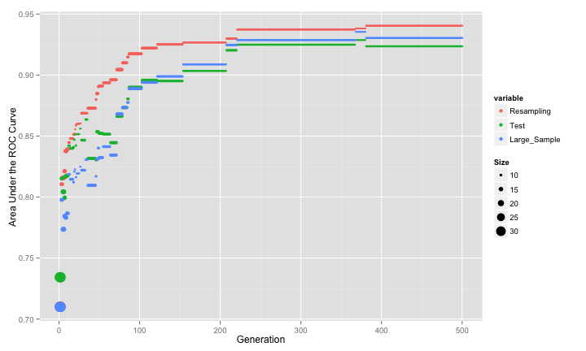
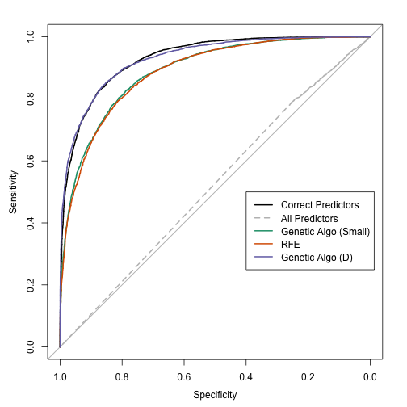
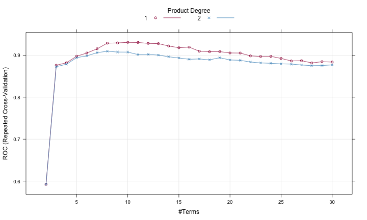
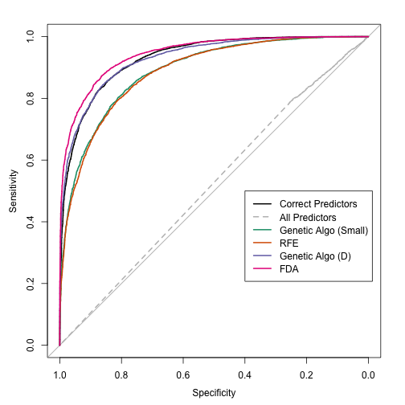

Feature Selection 2 - Genetic Boogaloo
Previously, I talked about genetic algorithms (GA) for feature selection and illustrated the algorithm using a modified version of the GA R package and simulated data. The data were simulated with 200 non-informative predictors and 12 linear effects and three non-linear effects. Quadratic discriminant analysis (QDA) was used to model the data. The last set of analyses showed, for these data, that:
- The performance of QDA suffered from including the irrelevant terms.
- Using a resampled estimate area under the ROC curve resulted in selection bias and severely over-fit to the predictor set.
- Using a single test set to estimate the fitness value did marginally better model with an area under the ROC curve of 0.622.
- Recursive feature elimination (RFE) was also used and found a much better predictor subset with good performance (an AUC of 0.885 using the large-sample data set).
For the genetic algorithm, I used the default parameters (e.g. crossover rate, mutation probability etc). Can we do better with GA’s?
One characteristic seen in the last set of analyses is that, as the number of irrelevant predictors increases, there is a gradual decrease in the fitness value (although the true performance gets worse). The initial population of chromosomes for the GA is based on simple random sampling, which means that each predictor has about a 50% chance of being included. Since our true subset is much smaller, the GA should favor smaller sets and move towards cases with fewer predictors… except that it didn’t. I think that this didn’t happen because the of two reasons:
The increase in performance caused by removing a single predictor is small. Since there is no “performance cliff” for this model, the GA isn’t able to see improvements in performance unless a subset is tested with a very low number of predictors.
Clearly, using the evaluation set and resampling to measure the fitness value did not penalize larger models enough. The plots of these estimates versus the large sample estimates showed that they were not effective measurements. Note that the RFE procedure did not have this issue since the feature selection was conducted within the resampling process (and reduced the effect of selection bias).
Would resampling the entire GA process help? It might but I doubt it. It only affects how performance is measured and does not help the selection of features, which is the underlying issue. I think it would result in another over-fit model and all that the resampling would do would be to accurately tell when the model begins to over-fit. I might test this hypothesis in another post.
There are two approaches that I’ll try here to improve the effectiveness of the GA. The first is to modify the initial population. If we have a large number of irrelevant predictors in the model, the GA has difficultly driving the number of predictors down. However, would the converse be true? We are doing feature selection. Why not start the GA with a set of chromosomes with small predictor sets. Would the algorithm drive up the number of predictors or would it see the loss of performance and keep the number small?
To test this, I simulated the same data sets:
set.seed(468)
training <- twoClassSim(500, noiseVars = 100,
corrVar = 100, corrValue = 0.75)
testing <- twoClassSim(500, noiseVars = 100,
corrVar = 100, corrValue = 0.75)
large <- twoClassSim(10000, noiseVars = 100,
corrVar = 100, corrValue = 0.75)
realVars <- names(training)
realVars <- realVars[!grepl("(Corr)|(Noise)", realVars)]
cvIndex <- createMultiFolds(training$Class, times = 2)
ctrl <- trainControl(method = "repeatedcv",
repeats = 2,
classProbs = TRUE,
summaryFunction = twoClassSummary,
allowParallel = FALSE,
index = cvIndex)The ga function has a parameter for creating the initial population. I’ll use one that produces chromosomes with a random 10% of the predictors.
initialSmall <- function(object, ...)
{
population <- sample(0:1,
replace = TRUE,
size = object@nBits * object@popSize,
prob = c(0.9, 0.1))
population <- matrix(population,
nrow = object@popSize,
ncol = object@nBits)
return(population)
}Then I’ll run the GA again (see the last post for more explanation of this code).
ROCcv <- function(ind, x, y, cntrl)
{
library(caret)
library(MASS)
ind <- which(ind == 1)
## In case no predictors are selected:
if (length(ind) == 0) return(0)
out <- train(x[, ind], y,
method = "qda",
metric = "ROC",
trControl = cntrl)
## Return the resampled ROC value
caret:::getTrainPerf(out)[, "TrainROC"]
}
set.seed(137)
ga_small_cv <- ga(type = "binary",
fitness = ROCcv,
min = 0, max = 1,
maxiter = 400,
population = initialSmall,
nBits = ncol(training) - 1,
names = names(training)[-ncol(training)],
x = training[, -ncol(training)],
y = training$Class,
cntrl = ctrl,
keepBest = TRUE,
parallel = FALSE)The genetic algorithm converged on a subset size of 14 predictors. This included 5 of the 10 linear predictors, 0 of the non-linear terms and both of the terms that have an interaction effect in the model. The trends were:

The resampling and the large sample results have the same pattern until about 75 iterations, after which point they agree in some areas and disagree in others. However the genetic algorithm begins to over-fit to the predictors. The resampling results do not reflect this but the test set would have picked up the issue.
Applying the resulting model to the large-sample set, the ROC curve is shown below along with the curves from the previous analysis.

Starting from small subset sizes appeared to have helped. Would using the evaluation set to estimate the fitness have had the same results?
ROCtest <- function(ind, x, y, cntrl, test)
{
library(MASS)
ind <- which(ind == 1)
if (length(ind) == 0)
return(0)
modFit <- qda(x[, ind], y)
testROC <- roc(test$Class,
predict(modFit,
test[, ind, drop = FALSE])$posterior[,1],
levels = rev(levels(y)))
as.vector(auc(testROC))
}
set.seed(137)
ga_small <- ga(type = "binary",
fitness = ROCtest,
min = 0, max = 1,
maxiter = 400,
population = initialSmall,
nBits = ncol(training) - 1,
names = names(training)[-ncol(training)],
x = training[, -ncol(training)],
y = training$Class,
cntrl = ctrl,
test = testing,
keepBest = TRUE,
parallel = FALSE)This GA showed:

The pattern is very similar to the previous GA run (where resampling was used).
Given that the resampling process is susceptible to over-fitting, how can we penalize the results based on the size of the subset? The idea of penalization/regularization is pretty common in statistics and machine learning. The most commonly known measure is the Akaike information criterion (AIC) which takes the objective function that is being optimized (e.g. RMSE or likelihood) and penalizes it based on the sample size and number of parameters. That’s not very straight-forward here. First, it is very model dependent. In many cases, the number of parameters is not a useful concept. What would be use for tree-based models? In ensemble models, there may be more parameters than data points. What is the objective function? I’ve been trying to optimize the area under the ROC curve, but there is not theoretical connection between the ROC curve and QDA. QDA can be motivated by Bayes’ Rule and, if a probability distribution is specified, it is for the predictor data.
One less theoretical solution uses desirability functions. This technique is used to blend several outcomes into a single measure of desirability. In our case, I want to maximize the area under the ROC curve but minimize the number of predictors in the model. The desirability function first defines curves that translates both of these characteristics to a [0, 1] scale where zero is unacceptable and one is desirable. Any curve can do. I’ll use the parameterization created by Derringer and Suich that defines high and low thresholds for each characteristic and linearizes the desirability in-between those values:
library(desirability)
## The best ROC value is one, 0.5 is the worst
dROC <- dMax(low = 0.5, high = 1)
## The 'best' possible model would have a single
## predictor and the worst would have everything
dPreds <- dMin(low = 1, high = ncol(training) - 1)
## Show them:
par(mfrow = c(1, 2))
plot(dROC, nonInform = FALSE)
title("Area Under the ROC Curve")
plot(dPreds, nonInform = FALSE)
title("Subset Size")
The ROC desirability curve is maximized when the area under the curve is high while the subset size curve is most desirable for small values. I can adjust the thresholds a several different ways. For example, I may only want subset sizes less than 100. If I move the high value to 100, any solution with less than 100 predictors would be equally acceptable. Another modification is to allow the curves to bend to make each characteristic easier or more difficult to satisfy. The SAS application JMP has a nice tool for configuring desirability functions (obviously, I used an R package above to create them).
The overall desirability is the geometric mean of the individual desirabilites. For two inputs, I multiply them together and take the square root. Since I’ve multiplied the values together, one consequence is that the overall desirability is unacceptable if any one of the individual values is unacceptable (i.e. a value of zero). This can be avoided by adjusting the individual curve to always be higher than a desirability of zero.
We can then maximize the overall desirability and hope that the GA can find a balance between performance and sparsity. I’ll define a new fitness function that uses overall desirability as measured with the resampled estimate of the area under the ROC curve:
Dcv <- function(ind, x, y, cntrl)
{
library(caret)
library(MASS)
library(desirability)
ind <- which(ind == 1)
if (length(ind) == 0) return(0)
out <- train(x[, ind], y,
method = "qda",
metric = "ROC",
trControl = cntrl)
rocVal <- caret:::getTrainPerf(out)[, "TrainROC"]
dROC <- dMax(0.5, 1)
dPreds <- dMin(1, ncol(x))
## Comnined the two with a geometirc mean
allD <- dOverall(dROC, dPreds)
## Calculate the overall desirability value
predict(allD, data.frame(ROC = rocVal, NumPred = length(ind)))
}Any I will once again use the GA package to search the predictor space:
set.seed(137)
ga_D <- ga(type = "binary",
fitness = Dcv,
min = 0, max = 1,
maxiter = 500,
population = initialSmall,
nBits = ncol(training) - 1,
names = names(training)[-ncol(training)],
x = training[, -ncol(training)],
y = training$Class,
cntrl = ctrl,
keepBest = TRUE,
parallel = FALSE)Here are the profiles for the three estimates of desirability (symbols sizes again indicate the subset size):
The first pattern to note is that all three estimates are strongly correlated. There seems to be negligable evidence of selection bias creeping in as before. The GA converged to a fairly small subset size. The genetic algorithm converged on a subset size of 8 predictors. This included 5 of the 10 linear predictors, none of the non-linear terms, both of the terms that have an interaction effect in the model and 1 irrelavant predictor.

n terms of the area under the ROC curve, the GA was able to produce pretty competitive performance:
finalDVars <- ga_D@bestBinary[[length(ga_D@bestBinary)]]
finalDFit <- qda(training[, finalDVars], training$Class)
finalDLarge <- roc(large$Class,
predict(finalDFit,
large[, finalDVars])$posterior[, 1],
levels = rev(levels(large$Class)))
finalDLarge
##
## Call:
## roc.default(response = large$Class, predictor = predict(finalDFit,
## large[, finalDVars])$posterior[, 1], levels = rev(levels(large$Class)))
##
## Data: predict(finalDFit, large[, finalDVars])$posterior[, 1] in 4640 controls (large$Class Class2) < 5360 cases (large$Class Class1).
## Area under the curve: 0.93The resampling results are slightly optimistic and the test set is slightly pessimistic. The large-sample estimate of the area under the ROC curve is 0.755, which is not as good as the true model (0.931) but better than the worst-case scenario (0.52). The ROC curves are:

So this approach is yielding near-optimal results.
As I did in the last post, I’m compelled to throw a wet blanket on all of this. Last time, I showed that, for these data, the RFE procedure was more effective than the GA. With the two adjustments I made to the GA, it has the performance edge. What if I were to use a classification model with built-in feature selection? One such approach is the Flexible Discriminant Model (FDA). FDA is a generalizes of linear discriminant analysis that can produce non-linear class boundaries. It does this using a framework that generalizing the basis functions that can be used. One approach is to use Multivariate Adaptive Regression Splines (MARS) to fit the model. MARS is a regression model that has one quality in common with tree-based models; MARS chooses one or more predictor to “split” on. Multiple splits are used to model different predictors, but if a predictor was never used in a split, the class boundaries are functionally independent of that predictor. So, FDA simultaneously builds a classification model while conducting feature selection. This is computationally advantageous (less models are being fit), less likely to over-fit and ties the feature selection process directly to model performance.
I fit an FDA model with MARS basis functions. There are two tuning parameters. First, the degree of the model indicates the maximum number of predictors that can be used in a split. I’ll evaluate only first or second degree models. The other parameter is the number of retained terms. MARS does a forward stage of splitting then, like tree models, prunes the model terms. The nprune parameter controls how far MARS can reduce the complexity of the model.
I’ll use caret package’s train function again with the same cross-validation scheme:
fdaModel <- train(Class ~ .,
data = training,
method = "fda",
tuneGrid = expand.grid(.nprune = 2:30,.degree = 1:2),
metric = "ROC",
trControl = ctrl)
fdaTest <- roc(testing$Class,
predict(fdaModel, testing, type = "prob")[, 1],
levels = rev(levels(testing$Class)))
fdaTest
##
## Call:
## roc.default(response = testing$Class, predictor = predict(fdaModel,
## testing, type = "prob")[, 1], levels = rev(levels(testing$Class)))
##
## Data: predict(fdaModel, testing, type = "prob")[, 1] in 219 controls (testing$Class Class2) < 281 cases (testing$Class Class1).
## Area under the curve: 0.947
fdaLarge <- roc(large$Class,
predict(fdaModel, large, type = "prob")[, 1],
levels = rev(levels(testing$Class)))
fdaLarge
##
## Call:
## roc.default(response = large$Class, predictor = predict(fdaModel,
## large, type = "prob")[, 1], levels = rev(levels(testing$Class)))
##
## Data: predict(fdaModel, large, type = "prob")[, 1] in 4640 controls (large$Class Class2) < 5360 cases (large$Class Class1).
## Area under the curve: 0.945The resampling profile for this model was:

The model used additive functions of the predictor data (which may result in an interpretable model). The ROC curves:

The results indicate that a single FDA model does better than the best possible QDA model and the model fitting process was much model simplistic and straight-forward for these data. This may not always be true. This simulation system has non-linear terms that QDA should not be able to model (and FDA/MARS can), so it is not a completely fair comparison.
The code for these analyses can be found here.
The next post in this series looks at another wrapper-based feature selection algorithm: particle swarm optimization.
(This article was originally posted at http://appliedpredictivemodeling.com)